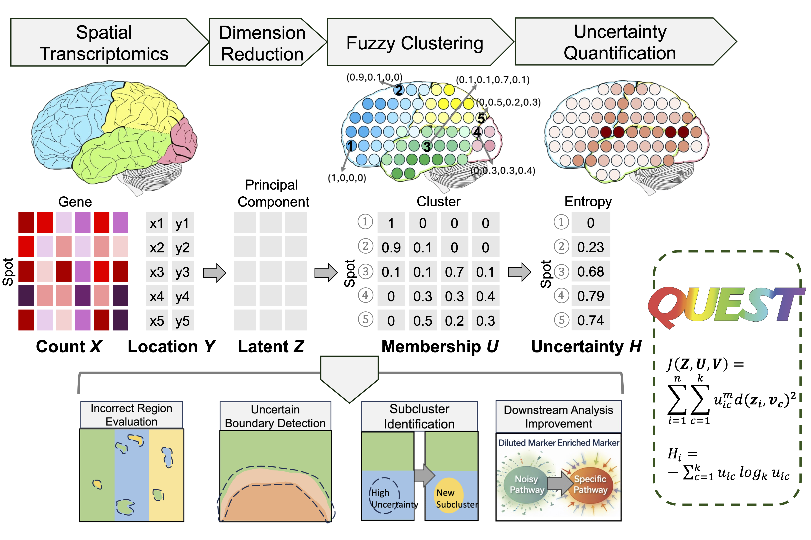

QUEST is a computational method that incorporates uncertainty quantification into spatial domain detection for spatial transcriptomics studies. It provides probabilistic domain assignments and location-level uncertainty estimates, enabling the separation of confidently assigned locations from ambiguous ones. QUEST facilitates the identification of novel tissue structures, including transitional boundaries and heterogeneous subdomains, improves the accuracy of downstream analyses by prioritizing high-confidence locations, and helps guide the determination of the number of spatial domains.
The method is implemented as an open-source R package with efficient C++ acceleration via Rcpp.

📦 Installation
You can install the latest development version of QUEST from GitHub:
# install.packages("devtools")
devtools::install_github("YanlinTong/QUEST")📘 Tutorial
This section demonstrates a working example of the QUEST pipeline.
👉 See the full tutorial here.